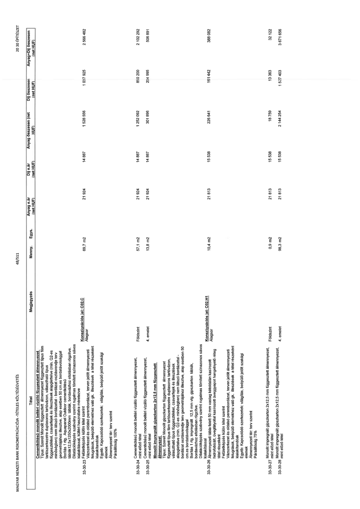

| Tétel | Megjegyzés | Menny. | Egys. | Anyag e.ár (net HUF) | Díj e.ár (net HUF) | Anyag összesen (net HUF) | Díj összesen (net HUF) | Anyag+Díj összesen (net HUF) |
|---|---|---|---|---|---|---|---|---|
| 33-30-23 Cementkötésű monolit beltéri vízálló függesztett álmennyezet Típus: Szerelt monolit függesztett álmennyezeti típus fém tartószerkezetre duplasoros tartóvázon, választható típus függesztőkkel, csavarfejek és illesztékek alapglettelve (min. Q2-es minőségben) nem látszó bordázattal - alap esetben 50 cm-es bordatávolsággal Borítás 1 rtg. Aquapanel Outdoor cementkötésű építőlemezek, táblák, bordavázhoz eltolásban rögzítve Dilatációképzés szabvány szerint rugalmas tömített szinazonos sávos kialakítással, kültéri használatra méretezve Vázszerkezet és oldalsó perembordázat, terven jelölt álmennyezeti felugrások, beépülő elemekhez való gk. illesztések a tétel részeként kialakítandók Egyéb: Kapcsolódó szerkezetek: világítás, beépülő jelölt szakági elemek Álmennyezeti tér: terv szerint Paraállóság 100% | Konszignációs jel: C02.C Alagsor | 69,7 | m2 | 21 924 | 14 887 | 1 528 556 | 1 037 925 | 2 566 482 |
| 33-30-24 Cementkötésű monolit beltéri vízálló függesztett álmennyezet, mint előző tétel | Földszint | 57,1 | m2 | 21 924 | 14 887 | 1 252 092 | 850 200 | 2 102 292 |
| 33-30-25 mint előző tétel | 4. emelet | 13,8 | m2 | 21 924 | 14 887 | 301 896 | 204 995 | 506 891 |
| 33-30-26 Monolit impregnált gipszkarton 2x12,5 mm függesztett álmennyezet Típus: Szerelt Monolit gipszkarton függesztett álmennyezet, függesztett típus fém tartószerkezetre duplasoros tartóvázon, választható típus függesztőkkel, csavarfejek és illesztékek alapglettelve (min. Q2-es minőségben) nem látszó bordázattal - alap esetben 50 cm-es bordatávolsággal Borítás 1 rtg. impregnált 12,5 mm vtg. gipszkarton táblák, bordavázhoz eltolásban rögzítve. Dilatációképzés szabvány szerint rugalmas tömített szinazonos sávos kialakítással Álmennyezeti tábla felett 50 mm vastag kétoldalán kasírozott üveggyapot/vagy ásványgyapot kasírozott hangelnyelő réteg tétel részeként Felületképzés külön tétel szerint Vázszerkezet és oldalsó perembordázat, terven jelölt álmennyezeti felugrások, beépülő elemekhez való gk. illesztések a tétel részeként kialakítandók Egyéb: Kapcsolódó szerkezetek: világítás, beépülő jelölt szakági elemek Álmennyezeti tér: terv szerint Paraállóság 75% | Konszignációs jel: C02.H1 Alagsor | 10,4 | m2 | 21 813 | 15 538 | 226 641 | 161 442 | 388 082 |
| 33-30-27 Monolit impregnált gipszkarton 2x12,5 mm függesztett álmennyezet, mint előző tétel | Földszint | 0,9 | m2 | 21 813 | 15 538 | 18 759 | 13 363 | 32 122 |
| 33-30-28 Monolit impregnált gipszkarton 2x12,5 mm függesztett álmennyezet, mint előző tétel | 4. emelet | 98,3 | m2 | 21 813 | 15 538 | 2 144 254 | 1 527 403 | 3 671 656 |
